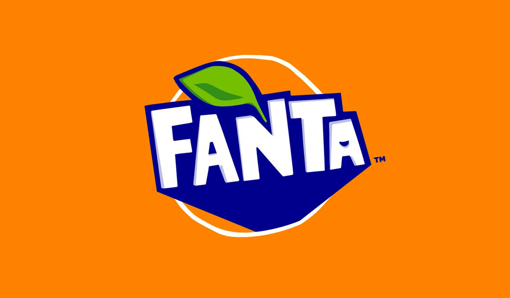

Front-end
Interfaces responsivas, acessíveis e focadas em uma experiência clara para o usuário.
- HTML5
- CSS3
- JavaScript
Olá, sou João Gari — estudante de Engenharia de Software, desenvolvedor em formação e apaixonado por criar experiências úteis com código.

Minha história profissional começou no Exército Brasileiro, onde aprendi, na prática, o valor da disciplina, da responsabilidade e do trabalho em equipe.
Hoje direciono essa mesma energia para a tecnologia. Estudo Engenharia de Software e desenvolvo projetos para consolidar conhecimentos em desenvolvimento web, Java, automação e inteligência artificial.
“Gosto de transformar aprendizado em prática e desafios em oportunidades de evolução.”
Interfaces responsivas, acessíveis e focadas em uma experiência clara para o usuário.
Desenvolvimento de soluções utilizando Java, algoritmos e integração com APIs, aplicando fundamentos de programação na construção de projetos práticos e funcionais.
Ferramentas que utilizo para organizar, versionar e desenvolver projetos, mantendo um fluxo de trabalho estruturado e preparado para colaboração.
Formação de cabos e contato com atividades de Tecnologia da Informação. Uma experiência que fortaleceu disciplina, liderança, organização e capacidade de atuar em equipe sob responsabilidade.
Aprofundamento em desenvolvimento de software, lógica de programação, orientação a objetos, redes e fundamentos de infraestrutura.
Atualmente, aprofundo meus conhecimentos em desenvolvimento de software por meio da graduação e de projetos práticos, explorando tecnologias web, estudando com curso e mentoria a parte da plataforma de graduação, no momento estou focado em me tornar um dev Full Stack e me apimorar em novas ferramentas para evoluir constantemente como desenvolvedor.

Ver projetoLanding page inspirada na identidade visual da Fanta, com animações interativas e movimentos acionados durante a rolagem para criar uma experiência dinâmica.
Experiência web responsiva criada para apresentar minha história, conhecimentos e evolução como desenvolvedor.
Estou aberto a oportunidades de estágio, posições de entrada e projetos em desenvolvimento de software.